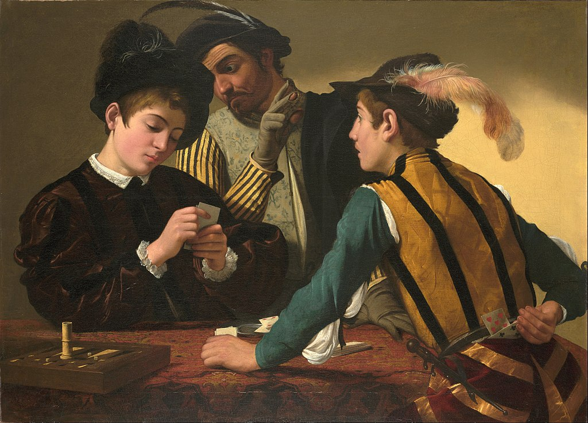

<head>
<meta charset="UTF-8" />
<meta name="keywords" content="drawing, painting" />
<meta name="description" content="drawings by Sunjy" />
<title>Sunjy</title>
<link rel="shortcut icon" type="image/x-icon" href="../../mImages/mCommon/favicon.ico" media="screen" />
<link rel="stylesheet" type="text/css" href="../../mCsses/mCommon/mCssA.css" />
<link rel="stylesheet" type="text/css" href="../../mCsses/mCommon/mCssB.css" />
<link rel="stylesheet" type="text/css" href="../../mCsses/mCommon/mCssC.css" />
<link rel="stylesheet" type="text/css" href="../../mCsses/mCommon/mCssD.css" />
<link rel="stylesheet" type="text/css" href="../../mCsses/mContent/mCssA.css" />
<link rel="stylesheet" type="text/css" href="../../mCsses/mContent/mCssB.css" />
<link rel="stylesheet" type="text/css" href="../../mCsses/mContent/mCssC.css" />
<link rel="stylesheet" type="text/css" href="../../mCsses/mContent/mCssD.css" />
</head>
<script type="text/javascript" src="../../mScripts/mContent/mContentAA.js" /></script>
<script type="text/javascript" src="../../mScripts/mContent/mContentAB.js" /></script>
<script type="text/javascript" src="../../mScripts/mContent/mContentAC.js" /></script>
<script type="text/javascript" src="../../mScripts/mContent/mContentAD.js" /></script>
<script type="text/javascript"></script> 
<script type="text/javascript">
document.write('<div class="mImgAbsolute"></div>');
/*
document.write('<p class="mFontSizeBColor" />From a white paper...</p>');
document.write('<table class="center"><tr><td>');
document.write('');
document.write('</td></tr></table>');
*/
</script>


<script type="text/javascript">
document.write('<p class="mFontSizeBColor" />The Cardsharps</p>');
document.write('<p class="mFontSizeSColor" />“The Cardsharps” by Caravaggio depicts a well-dressed but naive boy playing cards; he is the dupe. The second boy is the cardsharp, and he has extra cards tucked in his belt behind his back, out of sight, he also a dagger handy at his side.<br><br>The sinister older man is peering over the boy’s shoulder and signaling to his young accomplice with his fingers. “The Cardsharps” has a mixture of brutal real-world realism and the luminous Venetian delicacy.<br><br>Caravaggio has not created a caricature of vice but a narrative, in which the interaction of gesture and glance evokes the drama of deception and lost innocence in human of terms.<br><br>This innovative approach made Caravaggio’s art remarkable and unique and spread his reputation. The subject matter and composition proved to be in high demand as Caravaggio produced more than one version of this work.<br><br>Also, over fifty copies and variants, made by other painters have survived.<br><br>The first painting Caravaggio created with this theme on the nativity of a wealthy youth was with his painting titled “Good Luck,” followed by “The Fortune Teller.”<br><br>Other artists painted their versions of the theme, such as in “The Fortune Teller” by Georges de La Tour.<br><br>“The Fortune Teller” was the first artwork to draw attention to Caravaggio’s narrative style and composition, and this painting further cemented his artistic reputation.<br><br>The subjects in these compositions offered something new compared to the conventional genre subjects. Caravaggio created a theatrical style that was surprising as it was new.<br><br>He inspired others to more deeply explore their subject matter for the drama of psychological relationships.<br><br>Caravaggio created realistic scenes of street life, especially with this beautifully rendered attention to narrative details.<br><br>Details such as the warn out and split fingers on the older man’s gloves, or the cheat’s anxious and inpatient look at his mark.<br><br>The three figures are all bound together by the universal drama of innocents being duped. The cardsharp is no older than his target, and he is being corrupted by the older man who probably went through a similar apprenticeship in crime.<br><br>This painting was lost for some ninety years before it was rediscovered in 1987 in a European private collection.<br></p>');
document.write('<table class="center" /><tr><td>');
document.write('<br>The sinister older man is peering over the boy’s shoulder and signaling to his young accomplice with his fingers. “The Cardsharps” has a mixture of brutal real-world realism and the luminous Venetian delicacy.<br><br>Caravaggio has not created a caricature of vice but a narrative, in which the interaction of gesture and glance evokes the drama of deception and lost innocence in human of terms.<br><br>This innovative approach made Caravaggio’s art remarkable and unique and spread his reputation. The subject matter and composition proved to be in high demand as Caravaggio produced more than one version of this work.<br><br>Also, over fifty copies and variants, made by other painters have survived.<br><br>The first painting Caravaggio created with this theme on the nativity of a wealthy youth was with his painting titled “Good Luck,” followed by “The Fortune Teller.”<br><br>Other artists painted their versions of the theme, such as in “The Fortune Teller” by Georges de La Tour.<br><br>“The Fortune Teller” was the first artwork to draw attention to Caravaggio’s narrative style and composition, and this painting further cemented his artistic reputation.<br><br>The subjects in these compositions offered something new compared to the conventional genre subjects. Caravaggio created a theatrical style that was surprising as it was new.<br><br>He inspired others to more deeply explore their subject matter for the drama of psychological relationships.<br><br>Caravaggio created realistic scenes of street life, especially with this beautifully rendered attention to narrative details.<br><br>Details such as the warn out and split fingers on the older man’s gloves, or the cheat’s anxious and inpatient look at his mark.<br><br>The three figures are all bound together by the universal drama of innocents being duped. The cardsharp is no older than his target, and he is being corrupted by the older man who probably went through a similar apprenticeship in crime.<br><br>This painting was lost for some ninety years before it was rediscovered in 1987 in a European private collection.<br>" />');
document.write('</td></tr></table>');
</script>


